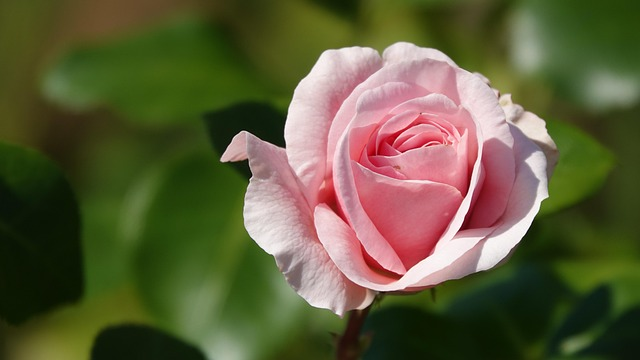
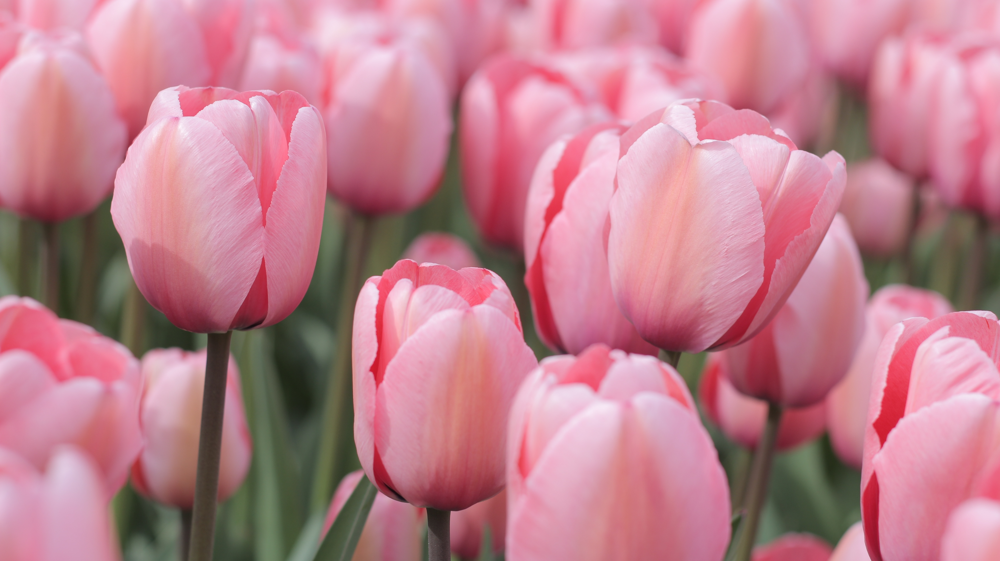
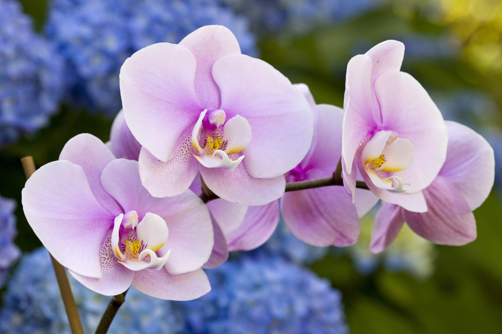
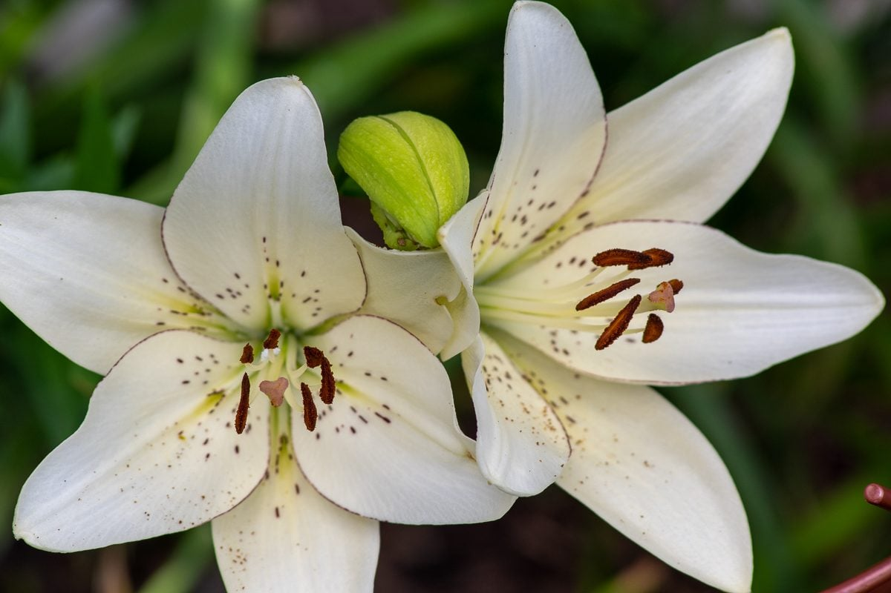
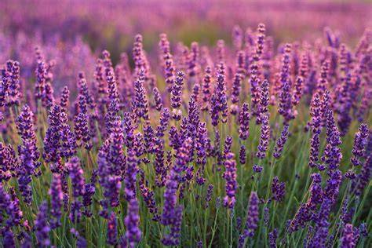

Welcome to the Flower Guide
Explore the sidebar on the left to discover details about five of the world's most popular flowers. Each entry features a brief overview and a link to dive deeper into their history, cultivation, and botanical details.
Visual Gallery

Rose

Tulip

Orchid

Lily

Lavender